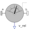

RelativeVelocityMeasure relative velocity vector between the origins of two frame connectors |

|
Diagram
{kind=link}
Information
This information is part of the Modelica Standard Library maintained by the Modelica Association.
The relative velocity vector between the origins of frame_a and of frame_b are determined and provided at the output signal connector v_rel. This vector is defined as:
r_rel = MultiBody.Frames.resolve2(frame_a.R, frame_b.r_0 - frame_a.r_0); v_rel = der(r_rel);
Via parameter resolveInFrame it is defined, in which frame the velocity vector is resolved:
| resolveInFrame = Types.ResolveInFrameAB. | Meaning |
|---|---|
| world | Resolve vector in world frame |
| frame_a | Resolve vector in frame_a |
| frame_b | Resolve vector in frame_b |
| frame_resolve | Resolve vector in frame_resolve |
If resolveInFrame = Types.ResolveInFrameAB.frame_resolve, the conditional connector "frame_resolve" is enabled and v_rel is resolved in the frame, to which frame_resolve is connected. Note, if this connector is enabled, it must be connected.
Example
If resolveInFrame = Types.ResolveInFrameAB.frame_b, the output vector is computed as:
r_rel = MultiBody.Frames.resolve2(frame_a.R, frame_b.r_0 - frame_a.r_0); v_rel_a = der(r_rel); v_rel = MultiBody.Frames.resolveRelative(frame_a.R, frame_b.R, v_rel_a);
Parameters (1)
| resolveInFrame |
Value: Modelica.Mechanics.MultiBody.Types.ResolveInFrameAB.frame_a Type: ResolveInFrameAB Description: Frame in which output vector v_rel shall be resolved (world, frame_a, frame_b, or frame_resolve) |
|---|
Connectors (4)
| frame_a |
Type: Frame_a Description: Coordinate system a |
|
|---|---|---|
| frame_b |
Type: Frame_b Description: Coordinate system b |
|
| v_rel |
Type: RealOutput[3] Description: Relative velocity vector resolved in frame defined by resolveInFrame |
|
| frame_resolve |
Type: Frame_resolve Description: Coordinate system in which v_rel is optionally resolved |
Components (4)
| relativePosition |
Type: RelativePosition |
|
|---|---|---|
| zeroPosition |
Type: ZeroPosition |
|
| der_r_rel |
Type: Der[3] |
|
| tansformRelativeVector |
Type: TransformRelativeVector |